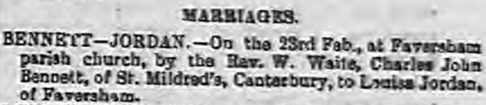

Charles John Bennett 1872 - c1949
[ Home ] | [ Calendar ] | [ Surnames Index ] | [ Errors ] | [ Family History ]Charles Bennett, the husband of Louisa Jordan (the second cousin twice-removed on the mother's side of Nigel Horne), was born in Rufford, Nottinghamshire, England on 27 May 18721,2 and married Louisa (with whom he had 4 children: Charlotte Priscilla, Charles James, Frederick Arthur and Margaret D Elizabeth, along with 1 surviving child) at St Mary Of Charity, Faversham, Kent, England on 23 Feb 19014.
During his life, he was living at Claremont Place, Canterbury, Kent on 31 Mar 19011 and on 2 Apr 19112.
He died c. Feb 1949 in Sittingbourne, Kent, England3.
Children
- Charlotte Priscilla was born on 20 May 1902
- Frederick Arthur was born on 3 Oct 1906
- Margaret D Elizabeth was born on 1 Jun 1909
Citations
- 1901 England, Wales & Scotland Census - Findmypast (was age 28 and the head of the household)
- 1911 Census for England & Wales - Findmypast (was age 38 and the head of the household)
- England & Wales deaths 1837-2007 - Findmypast
- England & Wales Marriages 1837-2005 - Findmypast
Media
Whitstable Times and Herne Bay Herald - 9 Mar 1901

1911 Census for England & Wales - GBC/1911/RG14/04322/0293/1
1901 England, Wales & Scotland Census - GBC/1901/0005479878
England & Wales deaths 1837-2007 - BMD/D/1949/1/AZ/000087/119
England & Wales marriages 1837-2005 - BMD/M/1901/1/AZ/000021/240
Kent marriages and banns - GBPRS/CANT/M/94027382/1
Kent marriages and banns - GBPRS/CANT/M/94084803/1
Family Tree

Map
Generated by ged2site. Last updated on Jul 3, 2024
Known Issues
No records of living with anyone
1939 UK register information missing